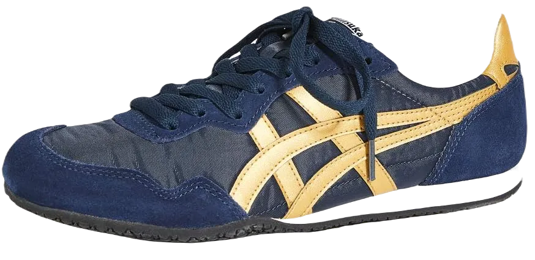
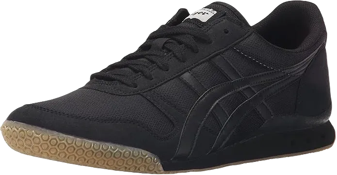
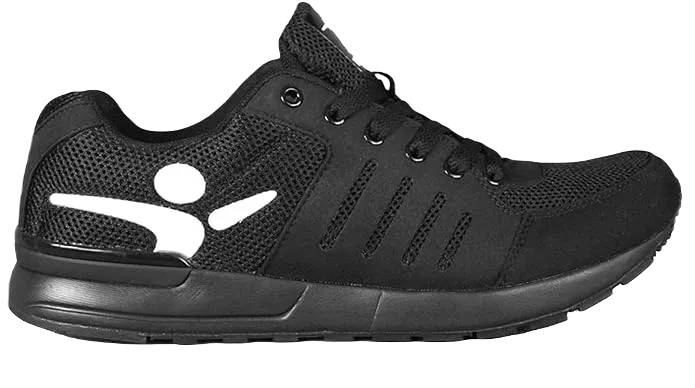

10 Best Parkour Shoes Reviews & Rating 2024
This article is dedicated to exploring the world of Parkour shoe brands, delving into everything you need to know about them! When it comes to personality, shoes are often the first thing people notice about you, even if it’s subconscious. This makes it essential to be selective when choosing your Parkour shoes, ensuring they reflect your style and needs.
Whether you’re a trainer, a jogger, or someone who works in an office, it’s important to find a pair of shoes that suits both your activities and your personality. Let’s dive deeper into this discussion and gain an overview of Parkour shoes! We’ll explore various brands, highlighting their pros and cons to help you make an informed choice.
-
#1
VivoBarefoot Men’s Neo
When discussing the features of Parkour shoes, we must highlight their weight, which is crucial. This particular Parkour shoe is not only lightweight but also exceptionally durable, making it a popular choice within the brand.
The price is quite reasonable, especially considering the high quality of the Puma Parkour shoes, which are widely embraced by athletes.
One minor drawback mentioned on some official websites is that the shoe can feel a bit tight around the toe area. However, this issue seems to arise from the varying shapes of different feet. While it’s not a common complaint, we feel it’s important to inform you about it. -
#2
Onitsuka Tiger Ultimate 81 Fashion sneaker
This shoe has gained immense popularity thanks to its fashionable design and impressive features, making it one of the best choices for Parkour enthusiasts.
They are lightweight and smooth, making them a preferred option for workouts and jogging. Additionally, their trendy style keeps them in high demand in the market.
The midsole of this model includes three ventilation holes, which serve an important purpose by reducing tension during high jumps. With their extremely lightweight construction and excellent design, these shoes are often available at affordable prices. While they are well worth the investment due to their quality and trendy appeal, one drawback noted by customers is that they may not provide adequate support for high landings. -
#3
Merrell Men’s Vapor Glove 2
.webp)
The Merrell Vapor is truly my favorite Parkour shoe, often referred to as a free-running shoe. It withstands all kinds of pressure, providing excellent support whether you're sprinting, making high jumps, or executing soft landings.
The Merrell Vapor Glove 2 allows for nearly any kind of movement, making it perfect for daily runners and adventurers alike. Anyone who enjoys hiking or climbing knows how essential a good grip is, and the rubber outsole delivers just that while remaining flexible. The price is quite reasonable, especially considering the value it offers. If you're into hiking, climbing, or free running, the Merrell Vapor 2 is an excellent choice.
Notably, it's easy to wash, lightweight, and highly durable, with a soft footbed and breathable mesh lining that keeps your feet comfortable. While the color options are somewhat limited, its numerous advantages make it a worthwhile choice. -
#4
Vibram KSO EVO
The Vibram KSO EVO stands out for its unique features, particularly its five-finger design that provides exceptional grip. This design allows the shoe to fit snugly on your toes, significantly enhancing traction on various terrains during workouts.
Ideal for CrossFit, this shoe is also regarded as one of the best Parkour options for trekking and gripping. Despite its lightweight construction, it includes a Microbial Dri-Lex Sockliner that repels microorganisms, helping to prevent odors. Additionally, the 2mm cushioning ensures comfort from the inside.
The shoe's design features fixed lacing, making it easy to put on and comfortable to wear. However, customer reviews have noted that it may not adequately support high landings, so that’s something to consider if you’re looking for this feature. Overall, the Vibram KSO EVO is a stable, durable shoe that offers great comfort and flexibility, making it a solid choice for anyone in the Parkour community. -
#5
Take Flight 1.0
This shoe is another top choice for Parkour enthusiasts, primarily due to its comfortable design. With a soft sole that enhances relaxation, it’s perfect for both trainers and those in training. Many athletes recommend it for workouts, especially during high jumps, as it provides excellent comfort.
Designed for flexibility, this shoe features a removable insole that further enhances comfort. The price is reasonable, making it an excellent option for anyone seeking superior quality without breaking the bank. If you're not looking to invest in something overly expensive, this shoe is likely a great choice.
In addition to its impressive grip, this shoe offers substantial cushioning that provides excellent support for your feet. However, keep in mind that the color options for this model are somewhat limited. -
#6
Chinese traditional Cloth
This Parkour shoe stands out in the market for its unique fabric construction, making it an excellent choice for long travels or extended wear. You'll find them incredibly comfortable, preventing any discomfort to your feet even after hours of use.
Despite its simple design, this shoe is quite breathable, allowing air to circulate freely and keeping your feet relaxed.
Lightweight and stylish, it features a rubber sole and is available at an affordable price. While its overall quality may not match that of other Parkour shoes, it has its own merits that make it a worthy option. -
#7
Nike Free run Parkour
.webp)
Originally designed for running, Nike shoes unexpectedly gained popularity in the Parkour community and have since become successful in the market.
These shoes are known for their comfort and flexibility, making them lightweight—not the lightest option available, but certainly durable. Their stylish appearance and flexible sole provide solid support, which contributes to their appeal.
Nike Parkour shoes are generally well-received for training purposes, featuring internal cushioning and a supportive midsole. While some customers have noted a slightly tighter fit, this may not be the case for everyone. Overall, they offer good durability at a reasonable price, making them a solid choice. -
#8
ASICS Men’s GEL Foundation
.webp)
These shoes are specifically designed for Parkour, catering to athletes with their impressive durability, comfort, and flexibility.
Their popularity among athletes is largely due to the stylish design and high-quality rubber sole, which offers excellent grip and flexibility. If you're passionate about Parkour, I highly recommend this option.
For trainers who perform high and low jumps, the ASICS Men’s GEL provides exceptional support and injury resistance. With breathable mesh and ample cushioning, your feet will remain comfortable even after long periods of use. However, keep in mind that not many sizes are available, so if you find a pair that fits, consider yourself fortunate. -
#9
Adidas Energy boost 3
.webp)
The Adidas parkour shoes are arguably the best choice, designed to meet all your needs. They provide excellent support for various activities, including free running, high jumping, and training, all while ensuring great flexibility and comfort. You'll enjoy an impressive grip whether you're running or hiking.
Despite appearances, these shoes are surprisingly lightweight, allowing you to move freely while jumping or running at speed. The solid rubber sole enhances your grip, and the midsole is essential for maintaining balance.
While the price tag may seem a bit high due to their popularity, investing in these shoes guarantees long-lasting durability and performance. They won’t let you down over time. -
#10
Feiyue Classic
These shoes are particularly fascinating because they were originally designed for martial artists, especially those practicing kung fu. If you're a martial artist, you understand the importance of controlling your feet and movements, making the Feiyue Classic an excellent choice for anyone looking to enhance that control.
The Feiyue Classic shoes are both durable and flexible, specifically designed to adapt to your foot movements. Their affordability adds to their appeal, making them a popular option among martial artists seeking quality footwear without breaking the bank.
These shoes feature a breathable design, ensuring your feet remain comfortable and relaxed during practice. The rubber sole provides excellent grip while you move, and its one-piece construction enhances durability and support.